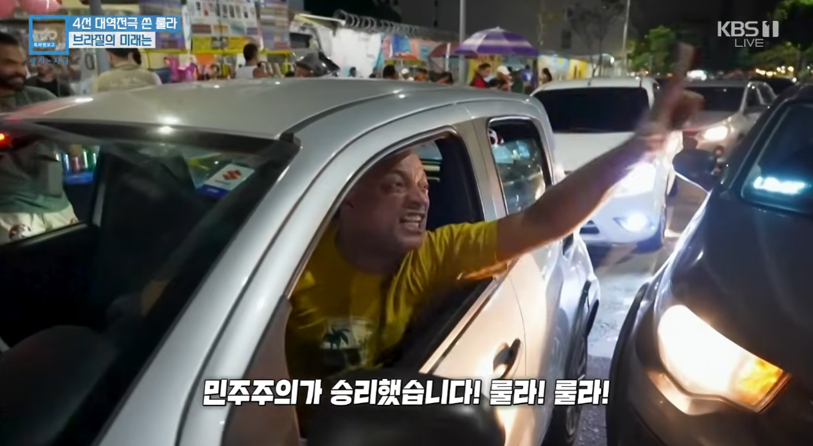
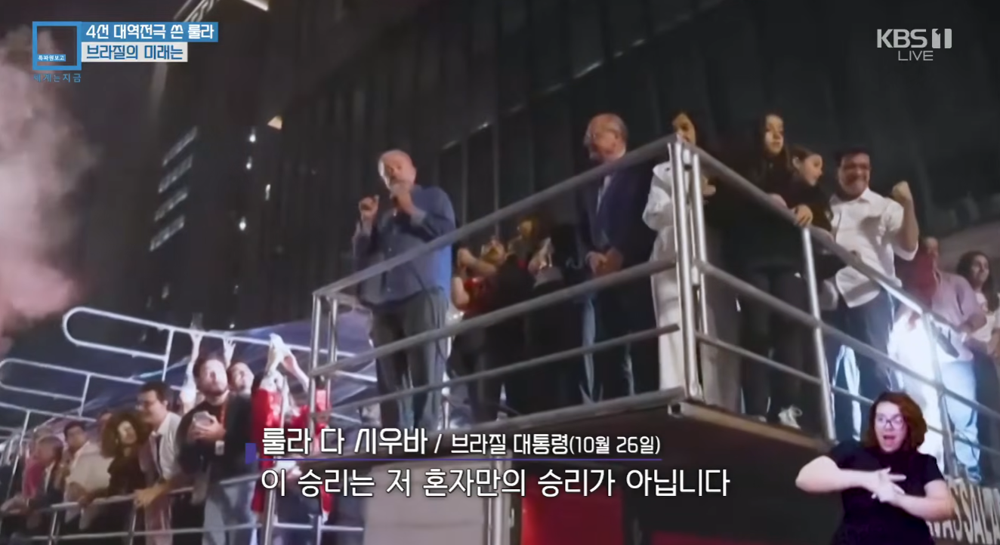
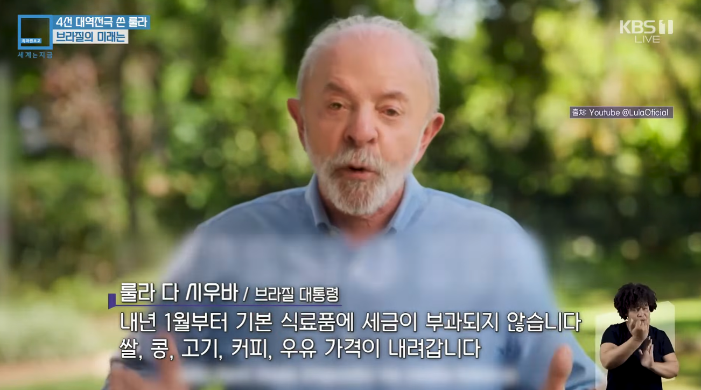
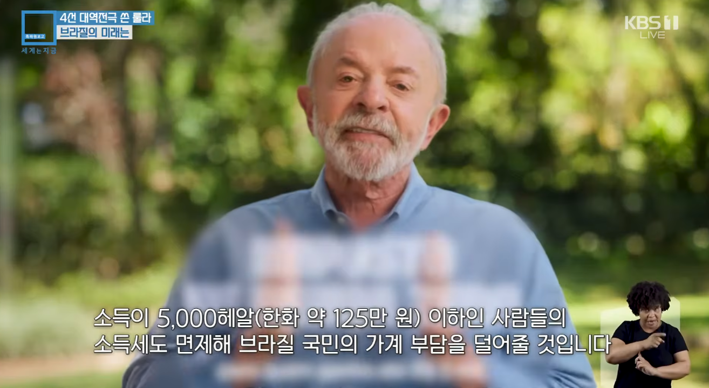
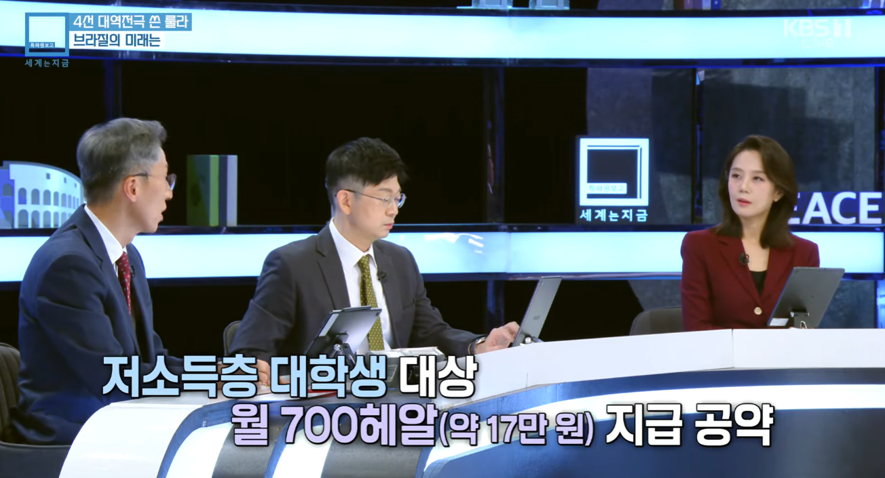
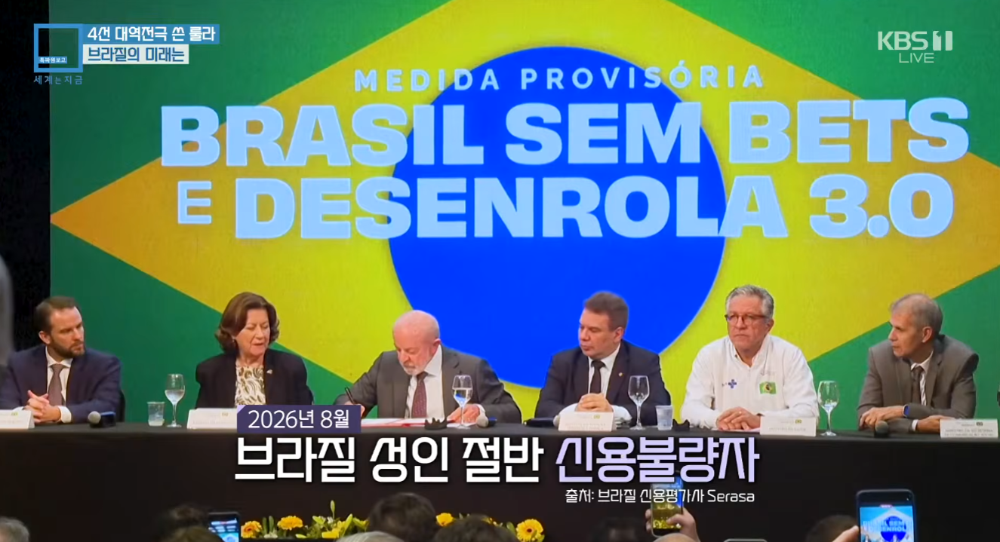
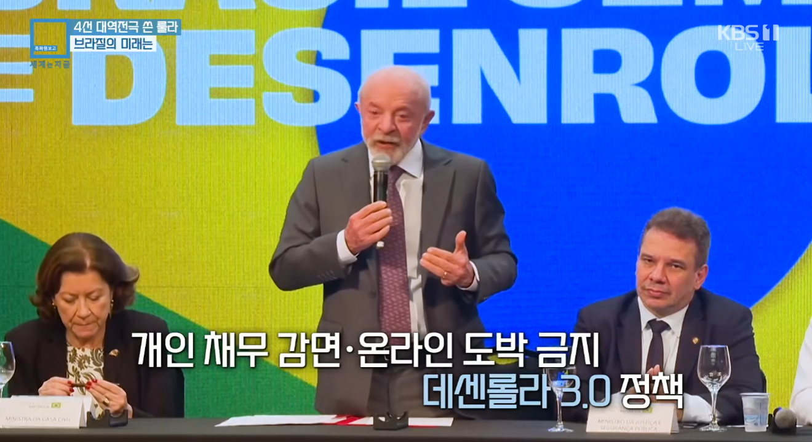
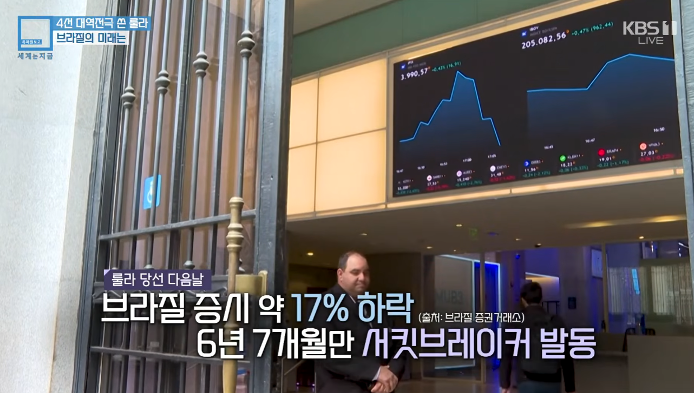
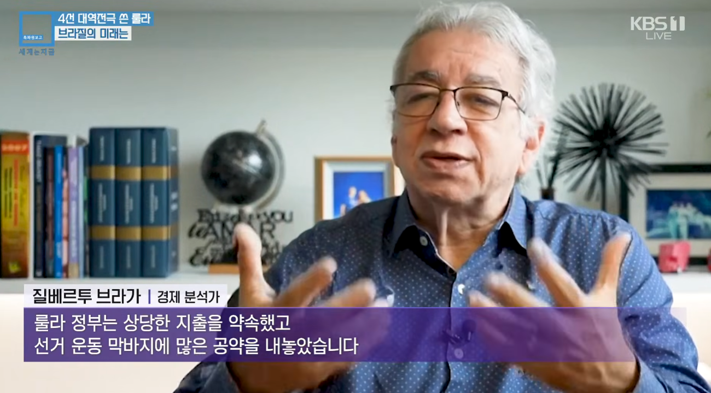
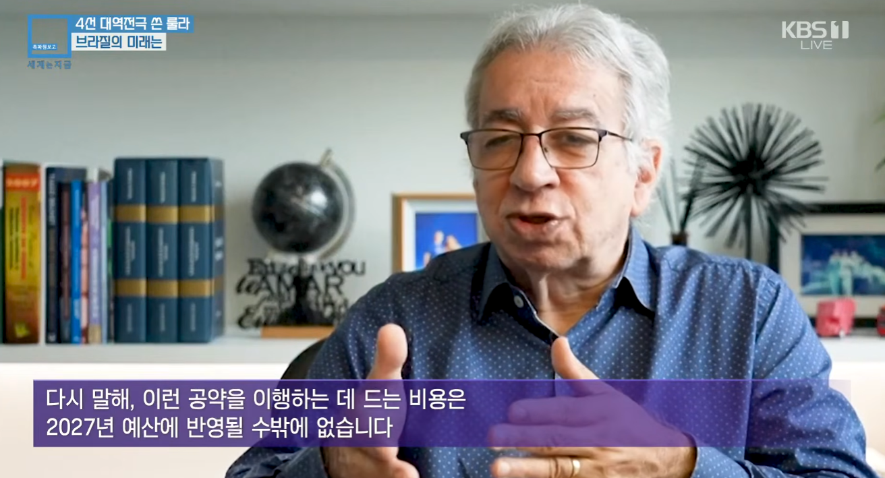
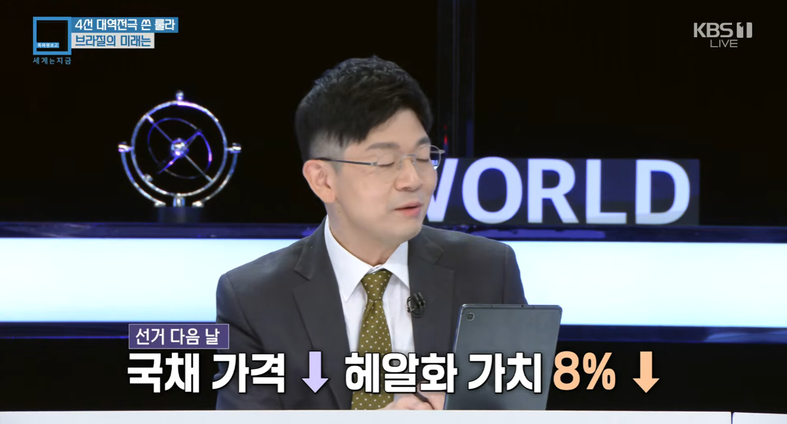
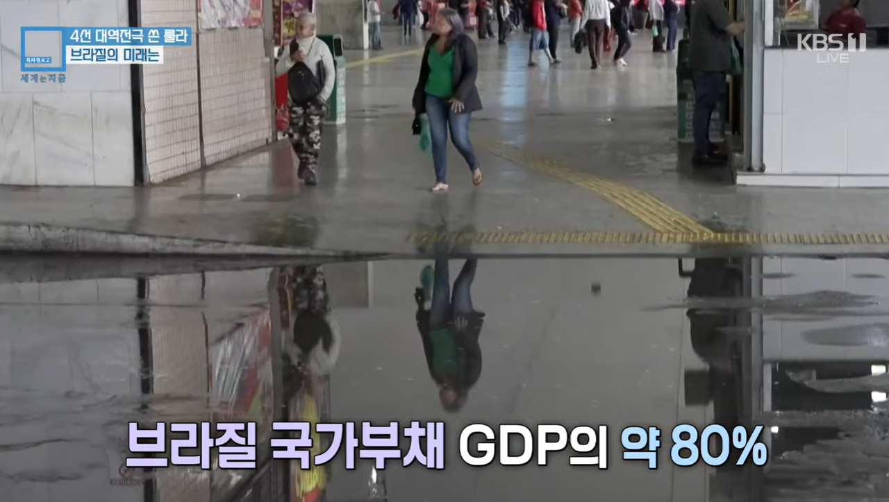
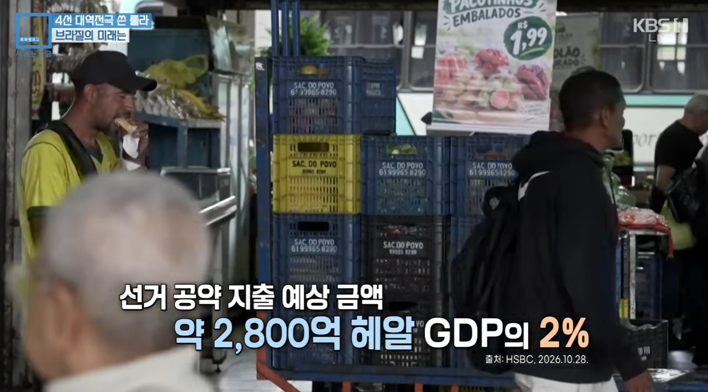
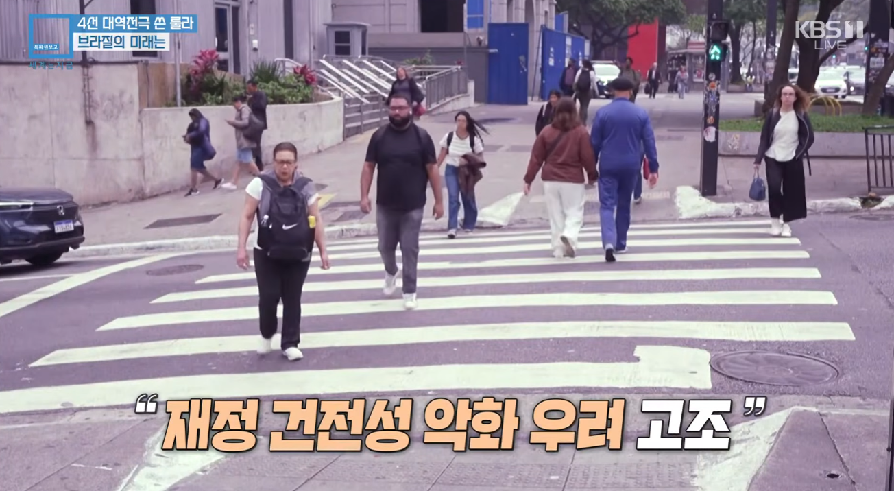
선거에서는 이겼지만 그 대가로 경제는 나락 가겠네














선거에서는 이겼지만 그 대가로 경제는 나락 가겠네
그 논리가 1차에서는 적용 안 되었나보네? 보우소나루는 긴축정책한다던데?
그럼 1차투표 보우소나루 이겼을때는 왜 브라질 주식 떡상함?
전기수도가스도로 등 공기업 400개 민영화 할거다! 이거 미국이 살거다!->주식떡상->근데 졌으니까 못한다!->주식떡락
아르헨티나 군용기 타고 미국으로 런친게 우리나라 대입해보면 북한 군용기 타고 중국으로 런친거라며ㅋㅋ
ㅅㅂ 아르헨티나 군용기 타고? 이거 완전 ㄱㅅㄲ 구만
1차투표 이후 경제지표가 빠진건 예측실패 패닉셀이라 보는게 맞을거같고
트럼프가 보우소나루를 밀어줬다는 배경까지 고려하면
규제 풀고 공기업 민영화하겠다는 공약의 보우소나루가 당선 됐을때
거기에 들어올 자본들이 과연 브라질이 도움되는 자본일지?
브라질판 일대일로일지?
룰라도 보우소나루도 브라질의 실물경제를 살릴지는 알 수는 없지만
불법 자금 세탁, 온라인 도박 사기 조직 연루 의혹, 폰지 사기 의혹 등 금융 및 부패 관련 혐의
+ 내란범인 아버지를 사면시키겠다
이런 이력의 보우소나루의 브라질이 룰라의 브라질보다 나을거라는 보장은 어디서 나옴?
헌정파괴는 한쪽은 확실, 경제는 둘 다 알수없음인데
경제가 먼저라며 국가 시스템을 뒤엎겠다는 내란범한테 물렁하게 굴고 헌법 가치까지 팽개칠 거라면,
브라질은 '자유'나 '민주주의'를 표방하기 힘들지...경제가 헌법 위에있나?
걍 나라 팔아먹을라고 해서 외부 자본이 일시적으로 떡상시킨거였네
이제 정상화 된 거였네 ㅋㅋㅋㅋㅋㅋㅋㅋㅋㅋ
브라질 국채 이율 높은것만 보고 사지말라더니 저렇게 되네
와 브라질 국채수익률 20프로급등 + 헤알화가치폭락까지더하면 한 손실-10프로후반대정도될듯
이율이 높다는건 그만큼 위험하다는뜻...
저긴 투표함에서 벽돌 안나옴?
정사판으로 가라
돈을 찍어내기라도 할 생각인가
아르헨티나 꼴 나겠네
상대는 런 했다며
근데 저짝도 여소야대 아닌가 의회는 자기편인데 왜 런했지
룰라룰라!
선거 졌다고 미국으로 런치는 새끼는
애국심이란게 존재는 했던거냐
사회주의군부독재하려다 캐삭빵걸고 졌으면 런 쳐야지 ㅋㅋ
나 이제 알아 혼자된 기분은~
차인거지
언제라도 넌 내가 원한것을 다줄듯 보였고~ 사바 사바
허나 쿠데타 새끼들을 뽑는 것보단 낫지 ㅋㅋㅋ
룰라도 망명 안하고 빵 갔고 지 애비도 결국 돌아와서 빵 갔는데 보우소나르는 지가 뭐라고 도망을 치냐
탈룰라했다는 댓글이 개웃겼음
탈룰라ㅋㅋ
독재보다 낫지
근데 반대쪽은 일잘하긴함?
병신임
남미에 미국껴있으면 10창날 확률이 아주 크지
룰라 재임시절에 계속 성장했는데? 일 괜찮게 하나봄?
원자재 팔아서 제조업 첨단산업에 투자 안하면 농사나 짓고 살아야지뭐 그게 브라질 국민이 원하는 모습인데 어쩌겠음
암암 원자재 다 헐값에 내다 팔고 소비 국가 해야제
1차때 플라비우가 1위하고 본인과 지지자들이 너무 나댔음
이제부터 저소득층이나 유색인종을 착취할거임 이수준이였으니
누가 보면 지돈으로 선심쓰는줄알겠내
내말이 ㅅㅂㅋㅋㅋㅋㅋㅋㅋㅋㅋㅋㅋㅋㅋㅋㅋㅋ
보우소나루가 경제 살리긴 했고? 이 글 작성자도 쥰내 투명하네 ㅋㅋ
탈룰라 못했누
이제 어떻게되려나
뻔하지 뭐
룰라 대통령됐다고 욕하고 싶은가본데, 1차 투표에서 이긴 다음에 개삽질해서 스스로 나락간 아들 보우소나루의 막장짓도 지적해야지. 굴러온 호박을 스스로 걷어찼는데 누가 뭐라고 할꺼야?
- 일단 아무도 원치 않았는데 대통령제를 4년 연임제에서 5년 단임제로 바꾸겠다고 자기 혼자 선언해버림.
- 대선 캠프에 비호감 스택 만땅 친 인플루언서 등용. 당선 후 번영부를 새로 신설하고 그 인플루언서를 초대 장관으로 세우겠다고 함. 1차 토론 때 그 인플루언서 조언 듣고 토론도 제대로 안하고 상대방 긁기만 하고, 룰라 후보가 얘기할 때 뒤에서 어슬렁어슬렁 춤을 추는 기행을 선보임
- 리우 빈민가에서 군경찰이 5살 소녀를 총으로 살해했는데 플라비우가 그 군 경찰을 무료로 변호했다는 사실이 밝혀짐. 2차 토론장에 참석한 피해자 소녀의 어머니에게 어머니를 죽은 딸 이름으로 부르고 도와주겠다고 함. 빡친 엄마가 '안나 클라라는 이미 죽었어!' 라고 소리침
- 2차 토론회에서 룰라 손가락 하나 없는 걸 가지고 조롱함. 근데 이 손가락은 룰라가 14살때부터 일을 시작하고 19살 때 공장에서 일하다가 잘린 것임. 노동자들의 역린과도 같은 손가락을 건드림
- 룰라 고향인 북동부를 빈민가로 묘사하고 이들은 구원이 필요하다는 광고를 SNS에 게시함
- META에서 룰라에서 불리하게 알고리즘이 설정되어 있었음을 시인함. 메타는 인위적 조작은 없었고 시스템적 오류라고 해명했으나 사람들이 이를 믿을리가...
- 아르헨티나 밀레이의 경제 모델을 도입하겠다고 주장함. 문제는 밀레이의 정책은 국가부도 위기에서 대거 민영화가 기반인데 안그래도 아르헨티나 좋아하지 않는 브라질 국민들이 받아들이기 어려웠음
쟤 아버지 자이르 보우소나루도 골때림. 완전 극우보수주의자인데 망언&막말이 심해서 '남미의 트럼프'라고도 불렸음. 여성혐오, 호모포비아, 인종주의자이며 '여성과 흑인은 국가 발전에 도움이 되지 않는다.', '흑인이 조종하는 헬기는 위험하다', '군인들이 원주민 사회를 말살하지 않은 것이 슬프다', '게이는 주먹으로 맞아야 한다.', '게이가 되느니 히틀러가 되겠다', '흉악 범죄자는 현상에서 즉각 사살해야 한다' 등의 흑인과 여성, 원주민과 동성애자에 대한 각종 망언을 일삼음.
경제적 자유주의를 주창하며 친기업과 자유무역을 지지함. 군사독재 찬양과 고문을 옹호하며 환경보호 반대와 기후변화를 부정하기도 함.
2022년 선거 때 룰라랑 붙었을 때 선거 당일 경찰이 유권자들을 태운 버스가 투표장으로 들어서지 못하게 막는 일도 있었으며 투표장에 바리케이트를 세워놨다가 선거재판소 소장이 고속도로 경찰들에게 바리케이트를 모두 치우라고 명령하기도 함.
결국 선거에서 지고 미국으로 튀었는데, 2023년 1월에 일어난 폭동에 관여하고 선거에서 패한 후 쿠데타 모의했다는 것이 밝혀지며 유죄 판결을 받음. 현재 징역 27년형을 선고받아 현재 가택 연금 상태에 있음.
룰라가 중간에 뇌물수수형 받아서 수감되었던것도 저쪽 공작 때문이라는 게 거의 기정사실임. 룰라는 국영 석유 기업인 '페트로브라스'와의 계약을 도와주는 대가로 브라질의 어느 건설 기업으로부터 뇌물을 받은 혐의를 적용받아 유죄판결을 받고 580여일동안 수감됨.
그런데 부패 스캔들 자체가 반대파들에 의한 조작일 가능성이 가시화되고 유죄 판결을 내린 판사가 룰라에 대한 유죄판결과 수감을 끌어낼 수사 가이드라인을 검사들에게 제시하고 검사들이 정치 중립성을 훼손한 행동을 한 정황 등이 발견되어 2021년 실형 무효 판결이 내려져서 정계로 복귀할 수 있었음.
넷플릭스에 있는 '위기의 민주주의'라는 다큐멘터리를 보면 검사가 룰라가 3층짜리 복층형 아파트를 뇌물로 받았다고 주장하는데 증거가 없으니까 '룰라가 그 아파트의 소유자라는 증거가 없다는 사실은 룰라가 아파트를 숨기려 했다는 증거로 간주된다' 라는 이유로 기소함. 룰라에게 10년형을 선고한 판사는 아버지 보우소나루가 대통령에 당선된 뒤 법무부 장관의 자리에까지 오름.
오죽하면 룰라가 2022년 대통령 당선된 후 대통령직 수락 연설 첫머리에가 "저들은 나를 산 채로 묻으려 했으나, 나는 지금 여기 있다." 였음.
대박이네 ㅋㅋㅋㅋㅋㅋㅋ
국민 절반이 신용불량자?? 막장국가네
애초에 포퓰리즘 따지면 극우포퓰리즘식 나라해쳐먹겠습니노 공약으로 보우소나루가 1차 이긴게 먼저라서
뭐? 가요톱텐 1위라도 했냐?
그렇다고 쿠데타 일으킨 극우를 뽑을 순 없잖아 << 이 논리가 결선에서 적용된 거임
실제로 보우소나루는 선거 지자마자 부리나케 미국으로 도망갔는데
이 사람이 이겼을때 무슨 짓을 했을지 대충 예측되지 않음?